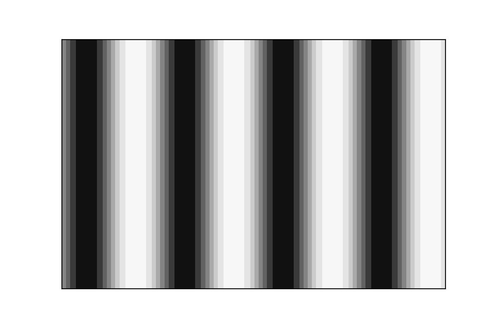
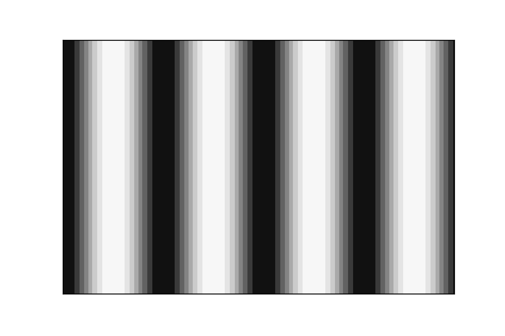
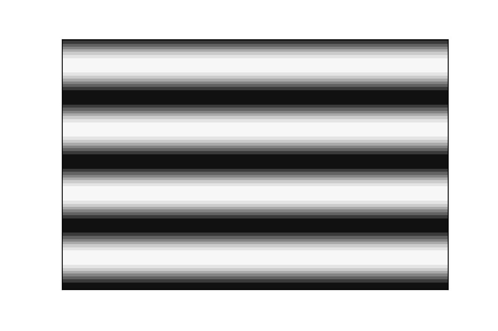
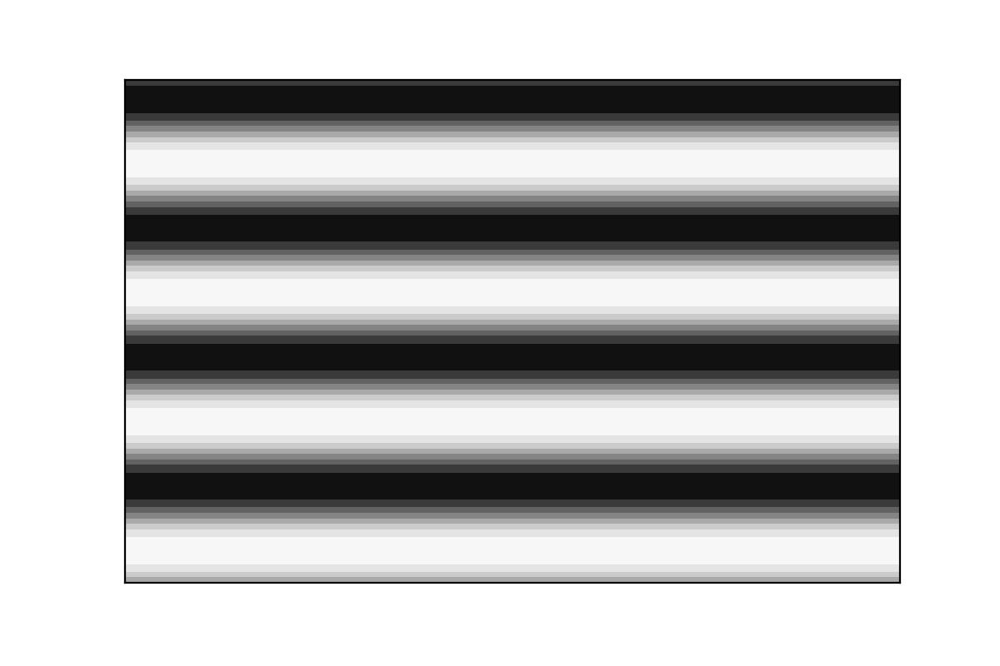
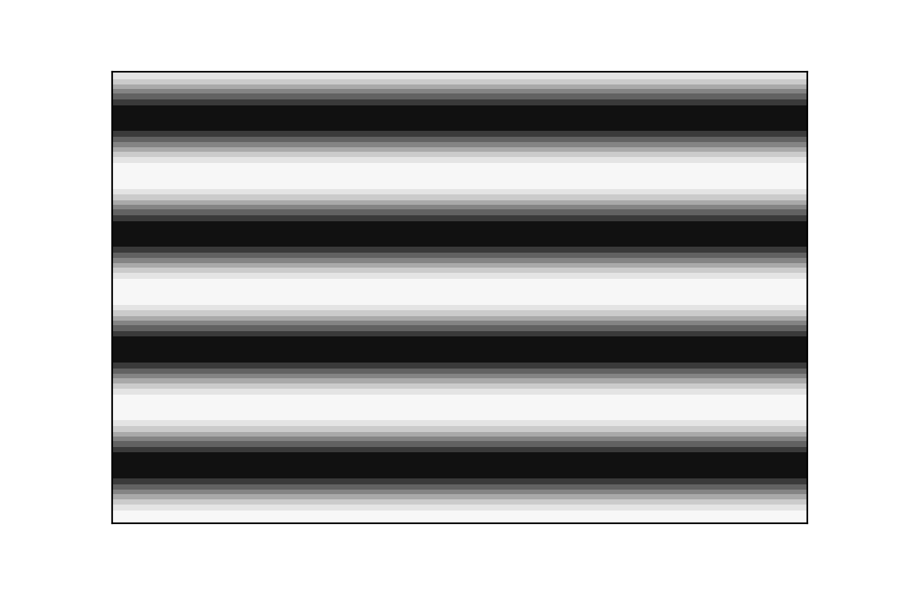

Polymap
1. Components
-
LCD screen
-
Emplacement of the studied object
-
Beam Splitter splitting incoming incident light by transmitting 50% of the light and reflecting 50% of the light
-
Lense
-
Camera
2. Technical caracteristics and important notations
-
L: The distance between the object surface and the LCD screen 56∼60 mm.
-
γ: The angle between the object surface and direction horizontal.
-
P: The spatial period of the fringes projected by the LCD screen.
-
\(Φ_w\): the wrapped phase
-
Φ: The unwrapped phase
-
(i, j) (or (x, y)): The position of a camera pixel.
-
h: The height of the local surface.
-
n: The normal direction of the local surface.
-
s i,j : The slope corresponds to the camera pixel (i, j).
-
The size of the LCD screen
-
Height: 62.1 mm/720 pixels
-
Width: 110.4 mm/1280 pixels.
-
-
Pixel size of the screen 0.08625 mm.
-
The size of the camera: 1200 x 1920 pixels.
-
k: Pixel size measured by the camera \(0.0045*0.0045 mm^2\) .
-
\(\gamma_{abs}(x, y)\in \mathbb{R}^+\) : the absolute contrast of pixel (x, y)
-
\(\gamma(x, y) \in [0,1]\) : the relative contrast of pixel (x, y)
3. How it works
The LCD screen (1) displays sinusoidal greyscale fringes in horizontal direction then in vertical direction. The fringes illuminate the surface of the studied object (2) and the reflection of this light is transmitted to the Camera (5) throught the Beam splitter (3) and the lense (4).
This process is repeated 4 times, changing the phase of the signal displayed by the LCD screen by \(\frac{\pi}{2}\) each time.
| Phase offset | Horizontal fringes | Vertical fringes |
|---|---|---|
\(0\) |

|
|
\(\pi/2\) |

|

|
\(\pi\) |

|
|
\(\frac{3\pi}{2}\) |

|
We then repeat this whole process again for different size of fringes.
By doing so, we can measure the intensity of the reflected light on each pixel for each of the phases used. We then get four intensity maps :
from those 4 maps, we can create :
-
The map of mean value of Intensity (when we will later talk about intensity files, we will talk about the mean value of Intensity by default) \(I_m(x,y) = \frac{I_0 + I_1 + I_2 + I_3}{4}\)
| we have the relationship \(I_i = I_m (1 + \gamma.cos(\phi + \frac{i\pi}{2})) \forall i \in {0,1,2,3}\) from this relationship, we can deduce other important informations |
-
The map of absolute contrast \(\gamma_{abs} = \sqrt{(I_0 - I_2)^2 + (I_3 - I_1)^2}\)
-
The map of relative Contrast (when talking about contrast files, we will talk about relative contrast by default) \(\gamma=\frac{\sqrt{(I_0 - I_2)^2 + (I_3 - I_1)^2}}{2I_m}\)
-
Wrapped Phase map \(\phi_{w}= arctan2(I_3-I_1, I_0 - I_2)\in ]-\pi;\pi]\)
-
And from all of the phase map (the biggest size pattern fringes bringing the continuity of phases and the smaller size pattern fringes bringing the precision), we can construct the unwrapped phase map.
From Phase data, we can then compute local slopes along vertical and horizontal axis, the information necessary to reconstruct the surface.